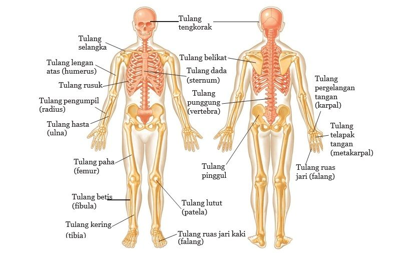

Struktur Rangka

1. Gambar Stuktur Rangka
Fungsi Rangka
Rangka merupakan alat gerak pasif yang tersusun atas tulang yang saling
berhubungan.
Tulang-tulang yang menyusun rangka tubuh manusia mempunyai
bentuk beraneka ragam sesuai dengan keduduanya dalam tubuh serta fungsinya.
Secara umum fungsi rangka adalah:
➢ Alat gerak pasif
➢ Memberikan bentuk tubuh
➢ Menahan dan menegakkan tubuh
➢ Tempat melekatnya otot
➢ Melindungi organ vital seperti otak, jantung, dan paru-paru
➢ Tempat pembentukan sel darah pada sumsum tulang
➢ Tempat penyimpanan kalsium dan fosfor.
Berdasarkan letaknya pada tubuh, rangka manusia dikelompokan menjadi dua
macam, yaitu :
1. Rangka Aksial, yaitu rangka yang terletak di sumbu tubuh
2. Rangka Apendikular, yaitu rangka yang terletak di kanan kiri sumbu tubuh dan jumlah
tulangnya sepasang.